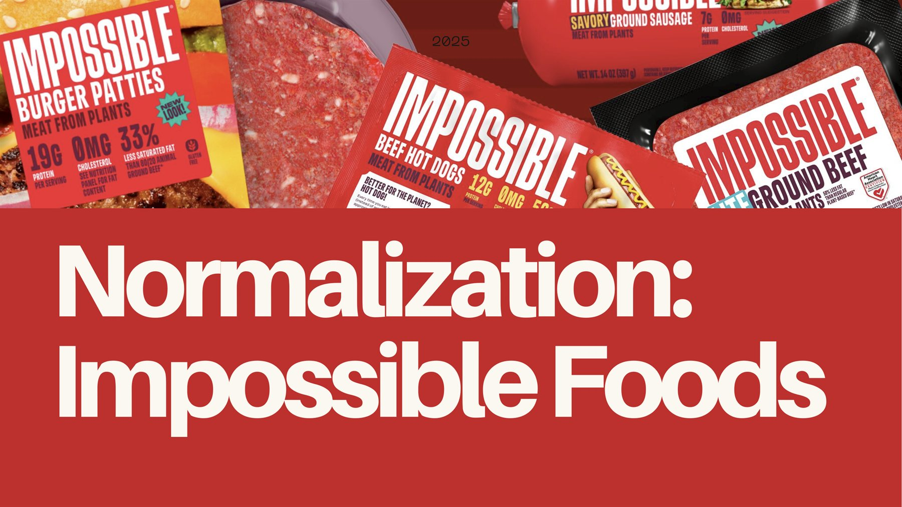
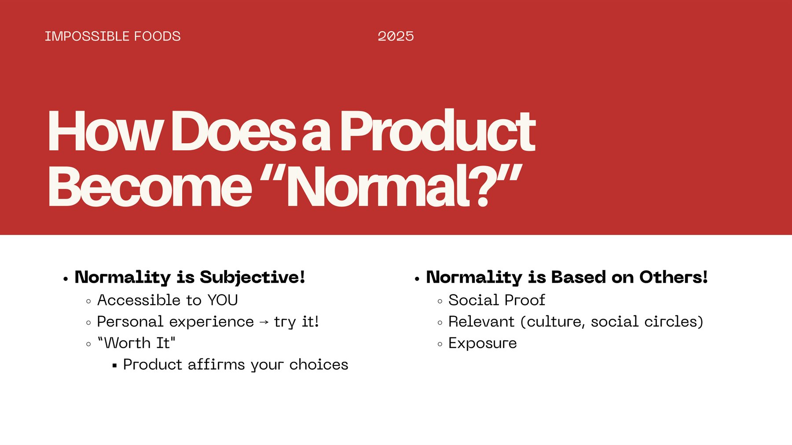
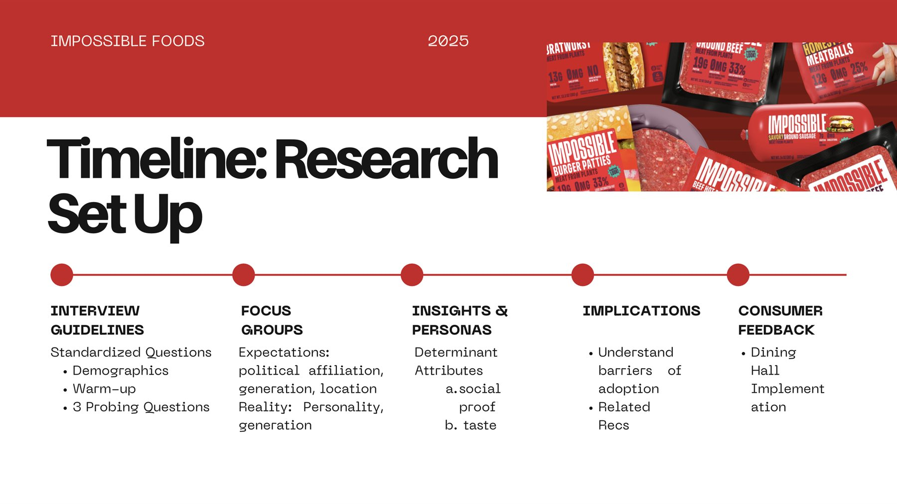
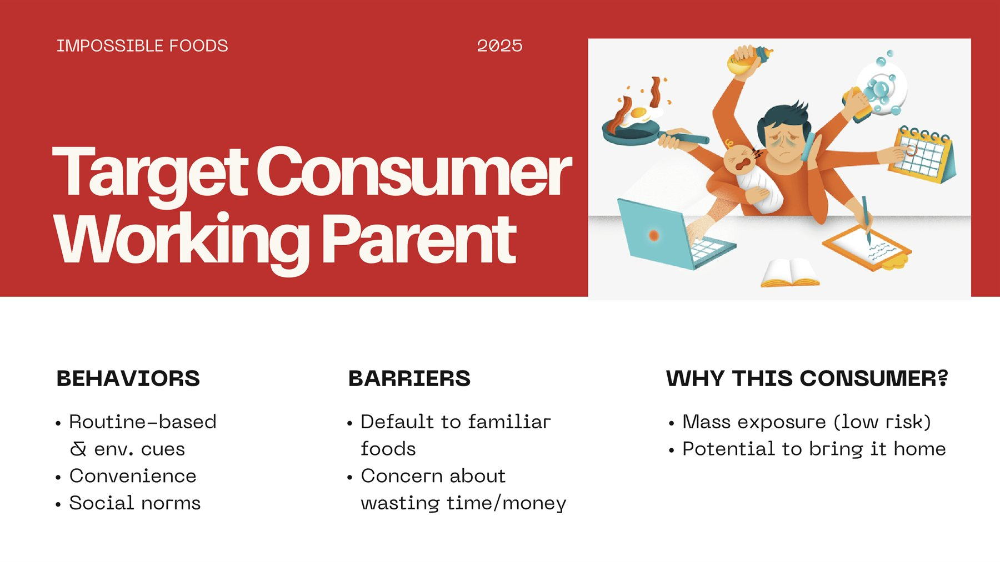
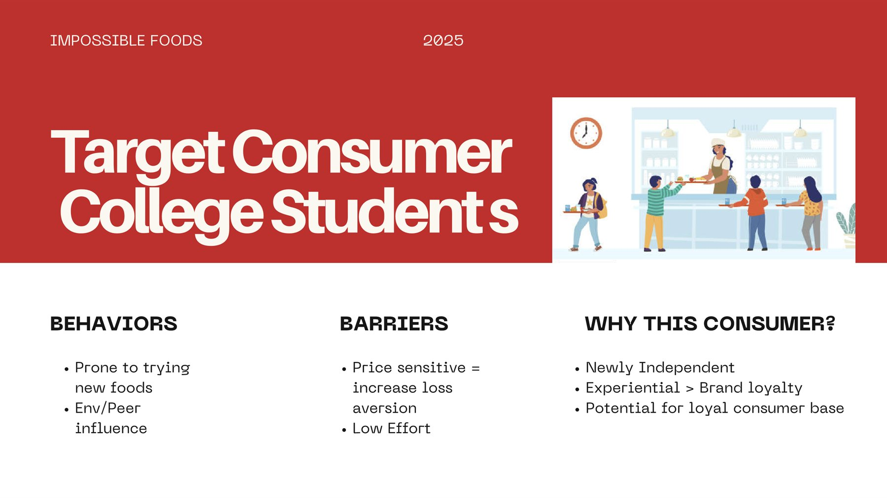
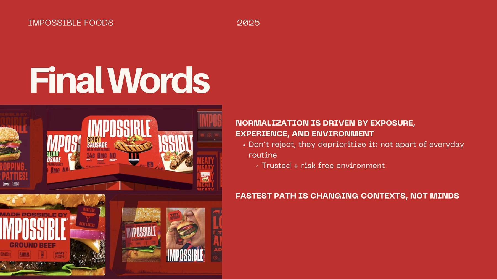
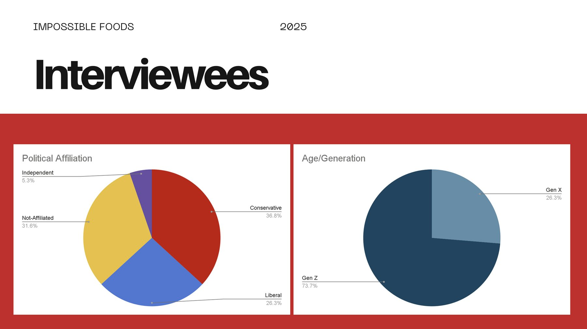
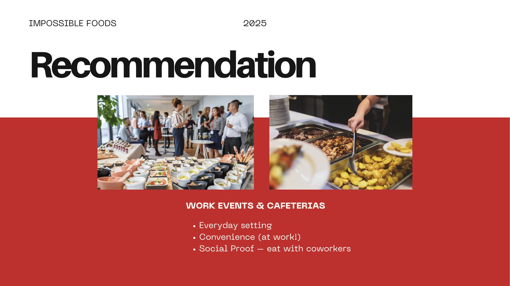
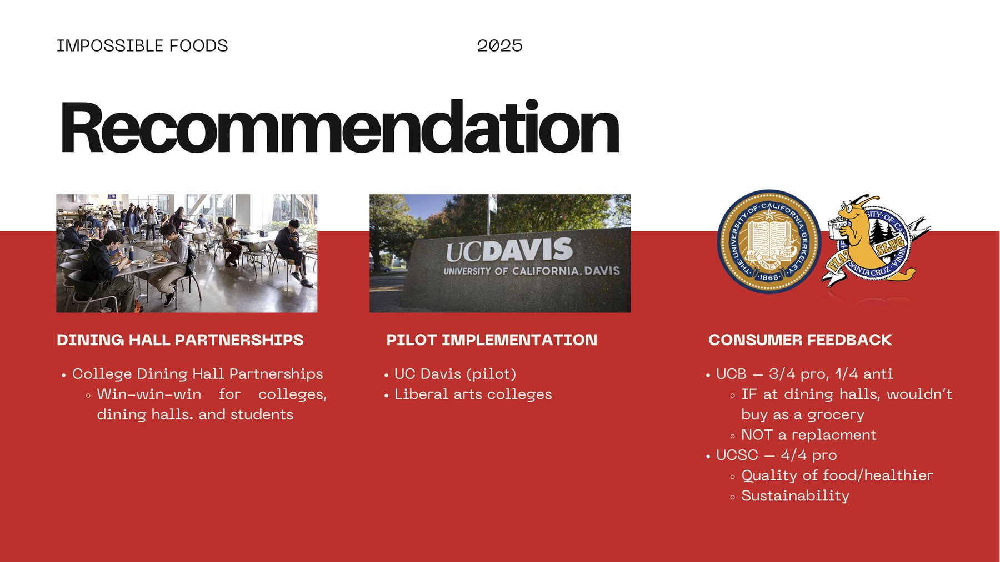

Impossible Foods: Making Plant-Based Meat Normal
The final project for my customer insights course at UC Berkeley. We interviewed real people and presented our ideas to a marketer from Impossible Foods.






About the project
Most people have heard of plant-based meat. Far fewer eat it regularly. Our team set out to learn how a new food goes from "weird" to "normal," and how Impossible Foods could use that to reach more people.
We interviewed 19 people one on one over video, found the patterns in what they said, and turned them into recommendations for Impossible Foods.
I was one of four consultants on the team.
What we set out to learn
- How a product goes from "weird" to "normal"
- What makes people try a new food, and what stops them
- Who Impossible Foods should focus on next
- Where Impossible Foods could reach those people in everyday life
A few words used on this page:
- Normalization
- When something new becomes an everyday choice, in the way LaCroix became a popular soda alternative.
- Consumer insight
- A truth about how people think or act that a brand can use.
- Target consumer
- The type of person a brand focuses on reaching.
- Social proof
- Trying something because the people around you already do.
- Consideration set
- The short list of options someone thinks about when deciding what to buy or eat.
- Latitude of acceptance
- The range of choices a person is open to. Anything outside it gets brushed off.
- Default bias
- Sticking with the usual choice because it's easier than changing.
- Loss aversion
- Not wanting to lose money or time on something new, which makes people avoid trying it.
- Determinant attribute
- The feature that actually decides whether someone buys, like price or taste.
What I did
Four consultants, 19 interviews, one presentation. My part:
- Interviewed people one on one over video
- Pulled out the key phrases and patterns from the interviews
- Designed our presentation in Canva
- Presented our findings in a 15-minute presentation

What we found
The short version: people don't reject plant-based meat. They just don't think about it, because it isn't part of their routine.
- "Normal" starts at home: people keep buying what their families bought, out of habit more than choice
- Friends and surroundings matter: people are more willing to try a new food when the people around them eat it
- A product feels normal once you see it often, even if you aren't the one using it
- People want to try before they pay: a free or low-cost taste lowers the risk, like a free sample at Sephora
- Price is the biggest barrier, and one sample isn't enough: the food has to become part of people's routines
What we recommended
- Serve Impossible Foods at work cafeterias and work events, to reach working parents where eating it is easy and shared with coworkers. Parents who like it may bring it home to their families
- Partner with college dining halls, to reach students while they're still forming food habits
- Start with a pilot at UC Davis and at liberal arts colleges
- Offer it next to regular meat, not instead of it


The result
We presented to a marketer from Impossible Foods in December 2025, and we won best presentation. Our main message: the fastest way to make plant-based meat normal is to change where people find it, not to change their minds.